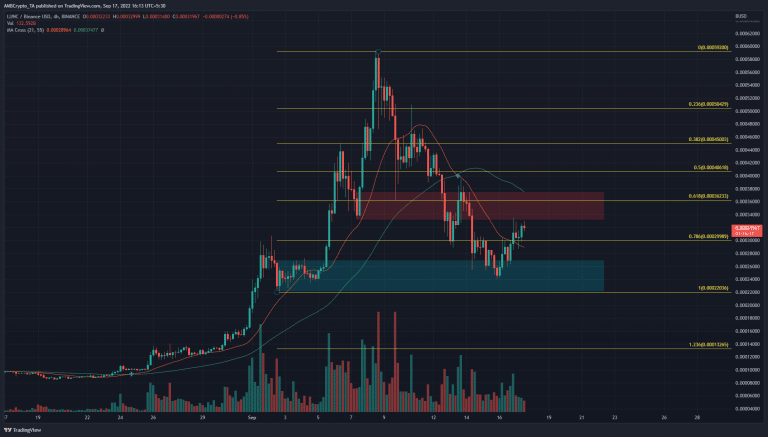

Finance Summary of the Week
Ukraine's tech scene finds creative ways to do business amid a full-scale war
When the Russian invasion of Ukraine began in February, Ukrainian venture capitalist Nathan Kay's priorities shifted overnight.
Kay, who's CEO of crypto-focused VC firm Mempool Ventures, had new problems — instead of growth for his company and his employees, the immediate-term became all about survival. "Each and every member of our team will never be the same as before," Kay told Yahoo Finance. "Not only did it change how we invested, but how we managed our team."
As the invasion began, Kay, who also serves as a senior partner at blockchain accelerator Applicature, adjusted his companies' HR practices to support a workforce in wartime. Mempool and its portfolio companies moved dozens of employees across the country, from the eastern parts of Ukraine to the safer west. In some cases, Kay's companies even helped employees move abroad.
But the changes couldn't be as simple as relocation. The lives of Ukrainian tech workers were in as much upheaval as the state of their startups. So, Kay began hiring coaches and psychologists to work with employees and encouraged founders to spearhead charity initiatives, including one with a million-dollar buy-in from Ethereum co-founder Gavin Woods.
For Ukrainians, there's been good news recently. This month, Ukraine notched substantial victories in pushing back Russian forces in the eastern and southern parts of the country. Troops have recaptured more than 6,000 square kilometers, or about 2,317 square miles, from Russian forces in recent weeks, Ukrainian President Volodymyr Zelensky said this week. This week, Zelensky even visited the re-claimed city of Izyum, much of which has reportedly been destroyed.
Still, for Ukrainian tech, emergency relief remains key, said Levchuk. She also stressed that Ukraine's considerable tech expertise and resources have and will continue to be valuable across Europe, adding another layer of hope for the future of the country's tech sector. “It’s still very competitive and challenging in Europe to find the great technical resources that Ukraine has so much of,” she said.

LUNC traders can look to trade with the trend as a zone of resistance looms ahead
Terra Classic [LUNC] saw huge volatility on the charts in September. It posted gains of close to 150% in the first week of September. In the following week, the price retraced a good portion of this move upward. What does LUNC hold over the next week?
A set of Fibonacci retracement levels were drawn for LUNC’s skyward surge in September. The 78.6% retracement level at $0.0003 acted as support earlier this week but succumbed to the selling pressure. Over the past day’s trading, this level has once more been flipped to support.
The bullish order block (cyan box) in the $0.00024 region saw a decent reaction in recent days as the price bounced 30% from the lows. However, it fast approached a zone of resistance at the 61.8% retracement level. In the first week of September, a bullish order block formed which saw LUNC rapidly rise from $0.00034 to $0.00059.
This same order block has now been flipped to resistance, and it was likely to act as a seller’s stronghold once again. Therefore, selling opportunity could arise over the next few days if Terra Classic continued to post gains toward $0.00036.
The indicators did not show a bullish picture either. It was true that the H4 Relative Strength Index (RSI) managed to climb back above neutral 50. Yet, in doing so, it formed a hidden bearish divergence. The price has made a lower high while the momentum indicator formed a higher high. This development could see the price react bearishly in the next few days.
The On-Balance Volume (OBV) also rose above a support level from early September, but only barely so. It has been relatively flat over the past week, even though the price saw a sharp decline. This suggested that selling pressure was not as heavy as expected, and recovery was a possibility.
The Chaikin Money Flow (CMF) also stayed in neutral territory over the past week, to once again highlight the lack of significant capital flow into or out of the market.
The price action showed there was a strong possibility of a rejection at $0.00036. The lack of selling volume in the past week suggested a recovery could be possible. Until LUNC can climb past the $0.00036 level and flip it to support, the bias would remain bearish.
This is YouTube Shorts’ best opportunity to surpass TikTok
For the past few years, major social platforms’ attempts to keep up with TikTok’s exploding popularity have felt laughable. To lure creators to its platform, Instagram even offered to pay out huge bonuses for posting viral Reels — in November, one creator told TechCrunch that they had been offered $8,500 for 9.28 million Reels views on Instagram. But users still don’t seem to want a TikTok-like experience from Instagram. Instagram even had to walk back some TikTok-like changes to its app after users (including Kylie Jenner and Kim Kardashian) expressed such deep distaste for them. Instagram head Adam Mosseri said that Instagram lags behind YouTube and TikTok in metrics important to creator satisfaction, a recent report from The Information showed.
Even though Instagram’s parent company Meta has poured a wealth of resources into building out Reels, internal documents leaked to the Wall Street Journal revealed that Instagram users are only spending a total of 17.6 million hours a day with the product. That’s less than ten percent of the time TikTok users spend on the platform, a cumulative 197.8 million hours a day.
Meanwhile, over 1.5 billion logged-in users watch YouTube Shorts each month, but the company hasn’t shared metrics about how engaged these users are. TikTok reached 1 billion monthly active users about a year ago.
If it can pull off this ad revenue share model, YouTube Shorts now has a chance to prove itself as the best way for short form video creators to make a living. Even better, we know that social apps love to copy each other. If YouTube Shorts’ new monetization structure can lure other platforms to figure out their own revenue sharing models ASAP, then we’re in for yet another boom in the creator economy.